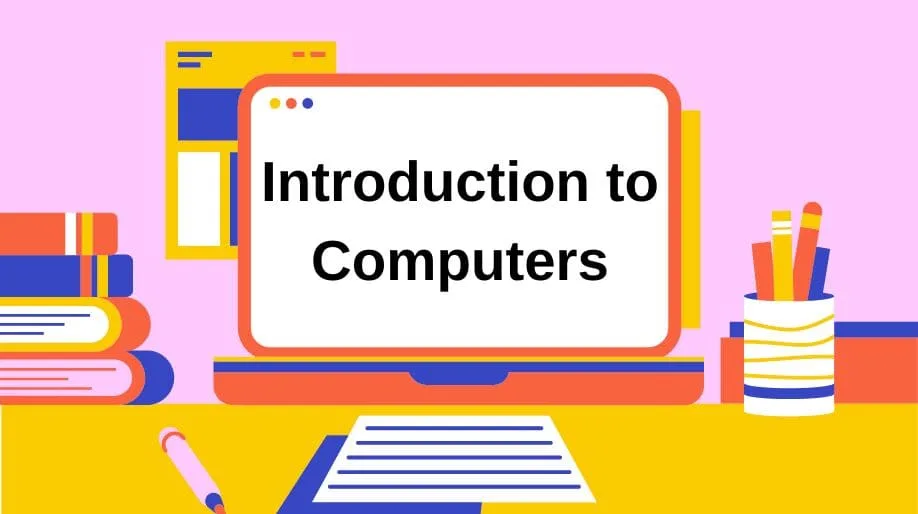
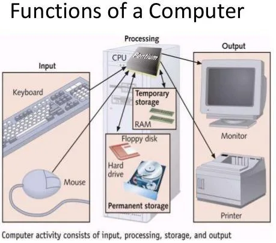
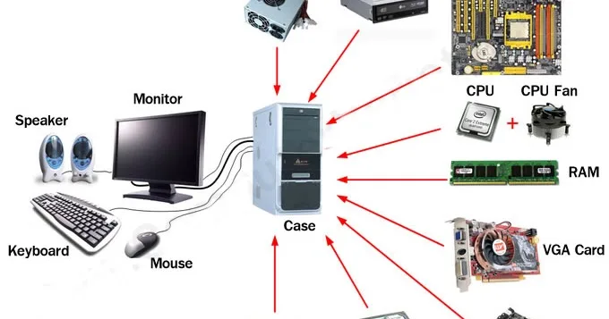
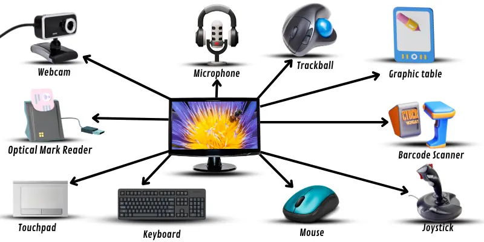
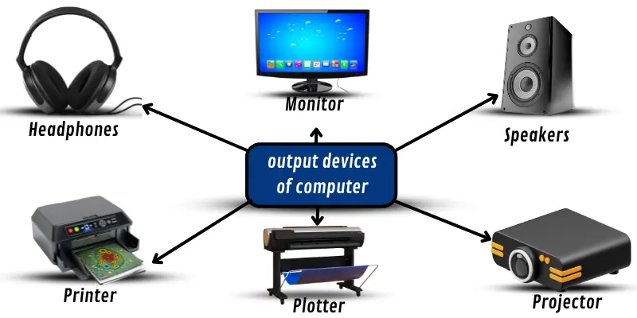

Expanded Nursing Uganda Explanation
Introduction to computer and computing should be understood beyond a short definition. Link the concept to patient history, focused assessment, common risks, nursing priorities, documentation and evaluation of outcomes.
Contents — 21 sections (tap to expand)
01 What is a Computer?
A computer is an electronic device that works under the control of instructions stored in its own memory. It can:
- Accept data (this is called input ).
- Process the data according to specific rules.
- Produce information (this is called output ).
- Store the information for you to use in the future.
02 Functionalities of a Computer
In simple terms, any computer performs five main functions:
- It takes in raw facts and figures, which we call data .
- It stores this data and the instructions on how to use it.
- It processes the data, turning it into useful information .
- It shows you this new information as output.
- It controls all these steps to make sure they happen correctly.
03 Data, Information, and Knowledge
It is important to understand these three related ideas:
- Data: These are raw, unorganized facts and symbols. By itself, data does not mean much. Example: The number "39.1".
- Information: This is data that has been processed and given context to make it useful. It answers questions like "who, what, where, when". Example: "The patient in Bed 5, Jane Auma, has a temperature of 39.1°C at 10:00 AM."
- Knowledge: This is the understanding you gain from information. It helps you make decisions and answers "how" questions. Example: "A temperature of 39.1°C indicates a high fever, so I need to administer paracetamol as prescribed and monitor the patient."
04 Computer Components: Hardware and Software
Every computer system is made of two main parts that must work together: HARDWARE and SOFTWARE .
05 Hardware
Hardware refers to the physical parts of the computer system that you can see and touch. Examples include:
- External parts: Monitor (screen), keyboard, mouse, printer, speakers.
- Internal parts: Hard drive, motherboard, memory (RAM) chips, graphics card, sound card.
06 Software
Software is a set of instructions or programs that tells the hardware what to do. You cannot physically touch software.
- System Software Application Software
- Purpose Controls and manages the computer's hardware. It is the foundation for all other software. Helps the user perform a specific task (e.g., writing a letter, browsing the internet).
- Examples Microsoft Windows, macOS, Linux, Android, iOS. Microsoft Word, Google Chrome, WhatsApp, Adobe Photoshop, patient record systems.
- Interaction Usually runs in the background. Users do not interact with it directly very often. Users interact with this software directly all the time.
- Dependency Can run by itself without any application software. Cannot run without system software (the Operating System).
07 Input Devices
These devices are used to enter data and instructions into the computer.
- Keyboard: For typing text and numbers. The most common layout is QWERTY.
- Mouse: A pointing device used to select items on the screen.
- Scanner: Converts paper documents into digital files on the computer.
- Microphone: Captures sound and voice.
- Webcam: A video camera that feeds video to the computer in real time.
- Touch Screen: Allows you to input commands by touching the screen directly.
08 Output Devices
These devices display or present the results of the computer's processing.
- Monitor: The screen that displays visual information. Types include LCD and LED.
- Printer: Produces a paper copy of documents. Types include Inkjet and Laser printers.
- Speakers: Produce audio output.
- Projector: Displays the computer's screen on a large surface.
09 1. Central Processing Unit (CPU)
The CPU is the brain of the computer . It is the most important part, responsible for performing almost all of the computer's work. It is made of three main parts:
- Arithmetic Logic Unit (ALU): This part performs all mathematical calculations (addition, subtraction) and logical operations (like comparing if one number is greater than another).
- Control Unit (CU): This part acts like a traffic police officer. It directs and coordinates all the operations inside the computer. It fetches instructions from memory and tells the other parts what to do.
- Registers: These are very small, super-fast storage areas inside the CPU that hold the data and instructions it is working on right at that moment.
10 2. Primary Memory (Main Memory)
This is the computer's main working memory. It is where data is stored temporarily while the CPU is processing it. There are two types:
- RAM (Random Access Memory): This is volatile memory, meaning its contents are erased when the computer is turned off. It is the computer's short-term workspace. The more RAM a computer has, the more tasks it can do at the same time smoothly.
- ROM (Read-Only Memory): This is non-volatile memory, meaning its contents are permanent and are not erased when the power is off. It holds the basic instructions needed to start up the computer (the BIOS). You cannot normally change what is stored on ROM.
11 3. Secondary Memory (Storage)
This is where data and programs are stored permanently. It keeps your files safe even when the computer is off.
- Comparison RAM (Primary Memory) Hard Disk (Secondary Memory / Storage)
- Purpose Temporary workspace for active files and programs. Permanent storage for all files and programs.
- Analogy Like your office desk - holds only what you are working on right now. Like a filing cabinet - holds everything for long-term, safe keeping.
- Volatility Contents are lost when power is turned off. Contents remain even when power is off.
- Speed Extremely fast. Much slower than RAM.
- Size Smaller amount (e.g., 4 GB to 16 GB). Much larger amount (e.g., 500 GB to 2 TB).
Other examples of storage include Flash Disks (USB drives) and Optical Disks (CDs, DVDs) .
12 Storage Measurement
Computer data is measured in units called bytes.
- Bit: The smallest unit of data, either a 0 or 1.
- Byte: A group of 8 bits. One byte can store one character, like the letter 'A'.
- Kilobyte (KB): 1,024 bytes. (About one page of plain text)
- Megabyte (MB): 1,024 KB. (About one high-quality photo or a short MP3 song)
- Gigabyte (GB): 1,024 MB. (About one movie)
- Terabyte (TB): 1,024 GB. (Thousands of movies)
13 Speed Measurement
The speed of a CPU is measured in Hertz (Hz) . This tells you how many instructions (or cycles) the CPU can perform per second.
- 1 Hertz (Hz): 1 cycle per second.
- 1 Megahertz (MHz): 1 million cycles per second.
- 1 Gigahertz (GHz): 1 billion cycles per second. (Modern computers are typically 2-4 GHz).
14 Types and Classifications of Computers
Computers come in many shapes and sizes.
- Personal Computer (PC) / Desktop: A computer designed for a single user, usually sits on a desk and is not easily portable.
- Laptop: A portable, battery-powered computer where the screen, keyboard, and system unit are combined into one device.
- Tablet: A very portable computer that is mainly a touch screen, with no physical keyboard.
- Smartphone: A mobile phone with powerful computing abilities, essentially a small computer that can make calls.
- Supercomputer: The largest and fastest type of computer, used for extremely complex scientific calculations, like weather forecasting or medical research.
15 Characteristics of a Computer
Computers are useful because of these key characteristics:
- Speed: They can process millions of instructions per second, completing complex tasks very quickly.
- Accuracy: They do not make mistakes unless given wrong data or instructions by a human.
- Diligence: They do not get tired or bored. They can perform the same task over and over again with the same speed and accuracy.
- Storage Capability: They can store huge amounts of information and retrieve it instantly when needed.
- Versatility: They can perform many different types of tasks, from writing a report to analyzing patient data to playing a video.
16 A Brief Note on Computer Viruses
A computer virus is a type of malicious software (malware) designed to spread from one computer to another and interfere with computer operation.
- Virus: A piece of code that attaches itself to a program. When you run the program, you also run the virus.
- Worm: A program that can copy itself and travel across networks without any human help.
- Trojan Horse: A program that looks like something useful (like a game or a helpful tool) but contains hidden malicious functions.
17 How to Stay Safe:
- Install reputable antivirus software and keep it updated.
- Be careful about opening email attachments from unknown senders.
- Do not download software from untrustworthy websites.
- Back up your important data regularly.
- What are the four main operations a computer performs according to its definition?
- Explain the difference between Data, Information, and Knowledge using a healthcare example.
- What are the two main components of any computer system? Give two examples of each.
- Name the three parts of the CPU and briefly describe the function of each.
- What is the key difference between RAM and ROM?
- Look at the two tables in the notes. Explain in your own words why an application like Microsoft Word needs System Software to run.
- Which is larger: a Kilobyte (KB) or a Megabyte (MB)? What might you measure in Gigabytes (GB)?
- What does "diligence" mean in the context of computer characteristics?
- What is the difference between a Laptop and a Tablet computer?
- Name one type of computer malware and describe one way to protect your computer from it.
Prepared Nurses Revision
18 Nursing Uganda Clinical Lens
Use Introduction to computer and computing as a practical nursing topic, not only a memorized definition. Translate theory into safe decisions, accountability, communication and service improvement.
- What to understand first: define introduction to computer and computing, identify the normal or expected pattern, then explain what changes when the patient is unwell.
- Why it matters in care: the nurse must recognize risk early, explain findings clearly, document accurately and know when to escalate.
- How to revise it: connect each point to assessment, nursing diagnosis or care problem, intervention, rationale and evaluation.
19 Assessment Guide
- The problem, stakeholders, available resources, policy requirements and ethical issues.
- Risks to patients, staff, confidentiality, quality, costs and continuity.
- Documentation, reporting lines, supervision and evaluation measures.
20 Nursing Priorities, Rationales and Outcomes
- Use evidence, policy and professional standards to guide action.
- Communicate clearly, document decisions and protect confidentiality.
- Evaluate whether the action improves safety, learning or service delivery.
The rationale for these priorities is patient safety: nursing actions should prevent deterioration, reduce discomfort, support recovery and create clear evidence for the next caregiver.
- Expected outcome: The plan is documented, realistic, ethical and improves patient care or learning outcomes.
21 Patient Teaching and Revision Check
- Explain introduction to computer and computing in simple language the patient or caregiver can repeat back.
- Teach warning signs, medicine or follow-up instructions, hygiene or lifestyle points where relevant.
- For exams, prepare a short answer using: definition, causes or risk factors, signs, assessment, management, complications and prevention.
- For ward practice, document baseline findings, actions taken, patient response and the plan for review.
Illustrations and Diagrams (5)





Related Video Lectures
Watch nursing lecture videos on YouTube for this topic. Opens in a new tab.
Watch on YouTubeExternal link: YouTube may use its own cookies and terms. Nursing Uganda is not affiliated with YouTube.